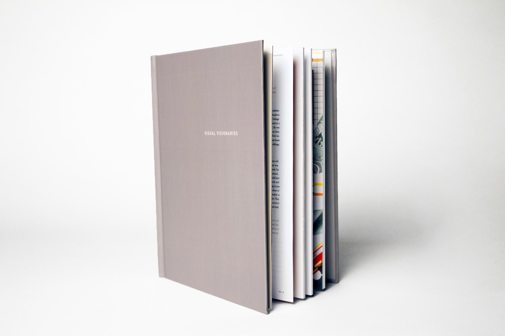
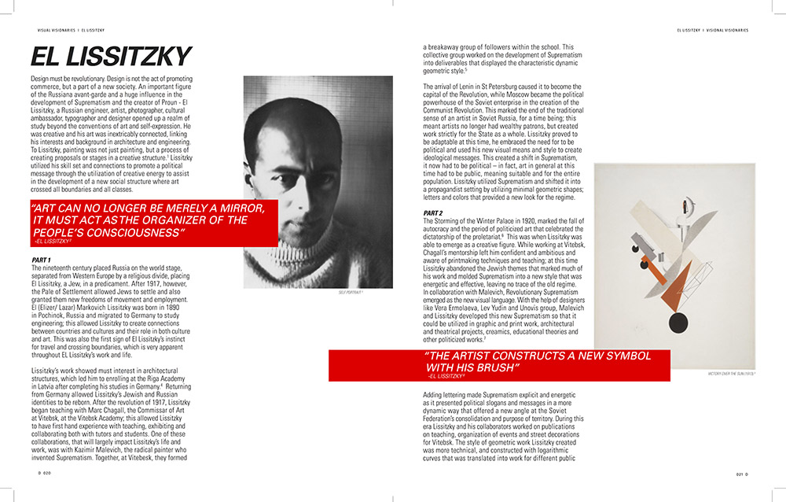
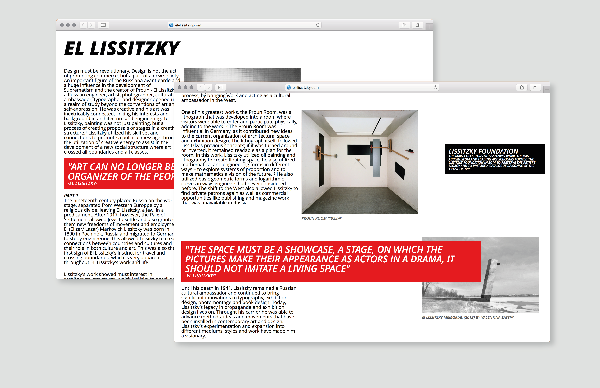
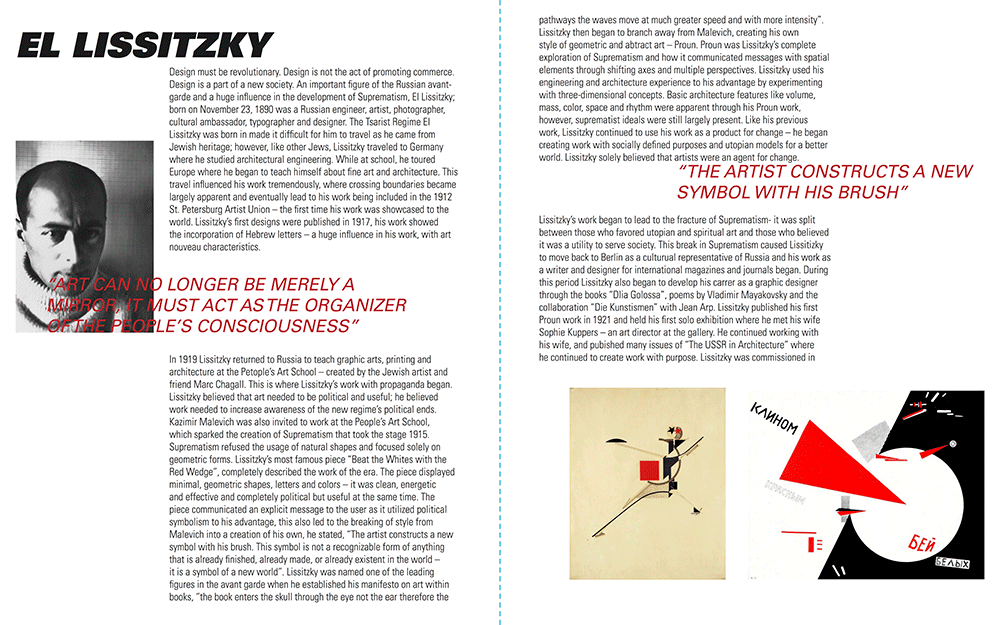
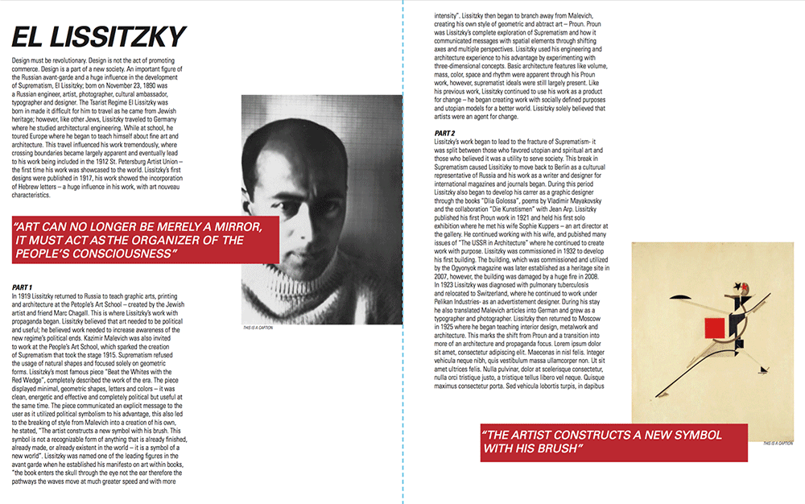

For this project we each selected a designer and then were tasked with writing a biography on them as well as developing spreads using our selected designer’s work as inspiration.

The finished book, containing 22 different designers work
Visual Visionaries was created by my sophomore fall communication design class, each student was tasked with selected a designer, writing a biography on said designer and creating a set of spreads inspired by the designer. I selected El Lissitzky - a true visionary, a revolutionary. El Lissitzky was a influential role in the development of Suprematism and in Russian design in general.

I was greatly interested in Lissitzky’s use of geometric shapes and white space

The purpose of this project was our first attempt at following a rigid structure that we developed and that would be consistent throughout

The large amounts of negative space and the utilization of the red boxes quotes are inspired by the Soviet style that first drew me to selecting Lissitzky
When developing his spreads, I was inspired by his story - his rebellion against the existing schools at the time as well as common conceptions of art and design. El Lissitzky was always changing, always moving - always bold. Lissitzky enjoyed the experimentation of form and how it related to one another through materials and what spiritual and aesthetic emotions it would bring up in an individual.

For the web piece I wanted to have the same air of negative space and free space that influenced Lissitzky’s work
The second part of this project was to create a website using HTML/ CSS; my goal was to follow this ever-changing and always bold and moving sense that I attempted to create in the spreads in a different platform.

My first spread iterations, these were inconsistent throughout - looking back I am glad I combated my stubbornness and allowed myself to advance
My initial concept was to create overlapping images with text as I wanted to copy his geometric shape work as well as his seemly geometric transitions, however, this went against the backbone of the project. By having no consistency I was not following the guidelines of the project and not advancing in knowledge on grids. I soon realized that all successful documents have a grid, even if they are difficult to see at first, and one must learn the structure of a grid before breaking it.

My later iterations, after I created a grid and style guide throughout I played with breaking it effectively
After I stopped “fighting” the project I set on creating a 2 column structure that was consistent throughout. I took a break, I stepped back and as soon as I fixed all the small issues within my spreads I began working on how to make the spreads more dynamic and exciting. I ended on housing large quotes in red boxes, which referenced his work. If I were to further iterate on this project I think I would begin playing with text being less rigid, maybe even on angles.